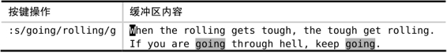
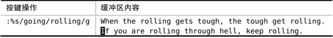

技巧88在文件范围内查找并替换每一处匹配
在缺省情况下，substitute命令仅仅作用于当前行，而且只会修改第一处匹配。因此，为了在整个文件的范围内修改每一处匹配，我们必须指定范围，并使用标志位 g 。出于演示的目的，我们将使用以下文本：
让我们试着将所有单词going替换为rolling。首先，我们要启用‘hlsearch’选项，以便接下来观察Vim的一举一动（有关更多细节，请参见技巧80）：
➾:set hlsearch
要使用substitute命令，最简单的方法就是为它提供待替换的模式{pattern}以及替换字符串{string}：
看看发生了什么。Vim已经将第一处“going”替换成了“rolling”，但其他匹配的内容并没有发生改变。
要理解其中的原因，一种行之有效的方法就是将文件想象成二维平面，字符沿着x轴增加，而文本行则随着y轴向下增长。在缺省情况下，substitute命令仅仅作用于当前行的第一处匹配。接下来看一看，如果要将替换范围扩大至由x与y轴所围的整个平面，我们都需要采取哪些措施。
为了使substitute命令作用于整个横轴，需要引入标志位g。g看似为全局之意（global），实则有误导之嫌。也许有人想借此标志位在整个文件范围内进行替换操作，但实际上，它仅表示“当前一整行范围”。如果你还记得我们在Vim（及其家族）的词源中讨论过Vim直接继承自“行编辑器ed”的话，这就能说得通了。
我们先按u键来撤销上次的修改，然后试着运行substitute命令的另一个版本。这一次，我们在命令的结尾附加标志位/g：

这一次，所有出现在当前行的going都被改成rolling了，但在文件的其他位置，仍有一些匹配未被修改。我们怎样才能控制substitute命令在整个文件的纵轴上执行呢？
答案是设定一个范围。如果我们在substitute命令的开头加上前缀%，它就会在文件的每一行上执行了：

substitute命令只是众多Ex命令中的一种而已，而对于所有的Ex命令，都可以用同样的方式为其指定一个执行范围。关于这一点，我们已在技巧28中做过深入的探讨，此处不再引申。
回顾一下，如果我们想在当前文件中查找并替换所有匹配，就必须明确地指示substitute命令要在整个x轴与y轴上执行，即凭借标志位g处理横轴字符的同时，使用地址符 % 处理纵轴的文本行。
在实际操作过程中，这些细枝末节往往让人顾此失彼。在技巧92中，我们将会见识几种用于重复substitute命令的技术。